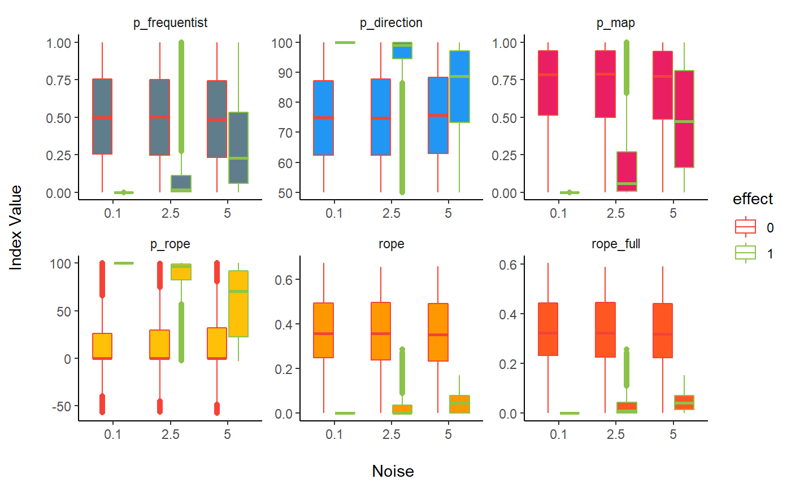
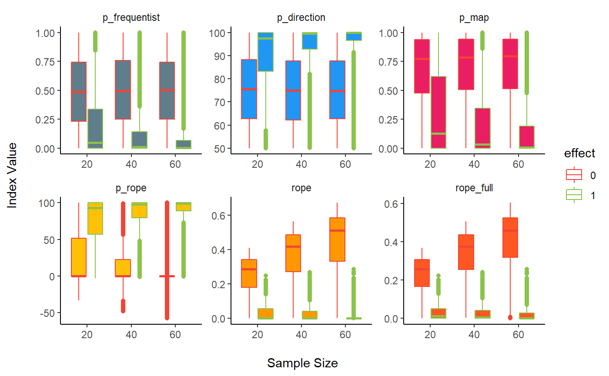
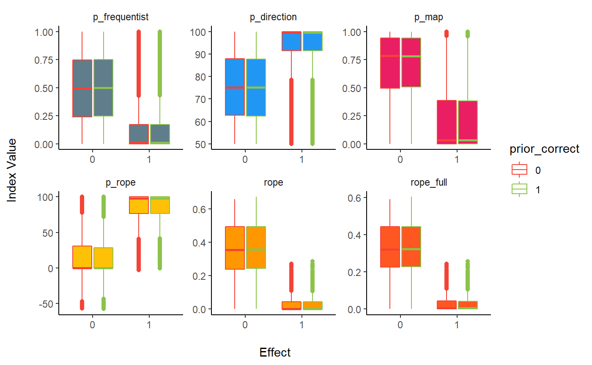
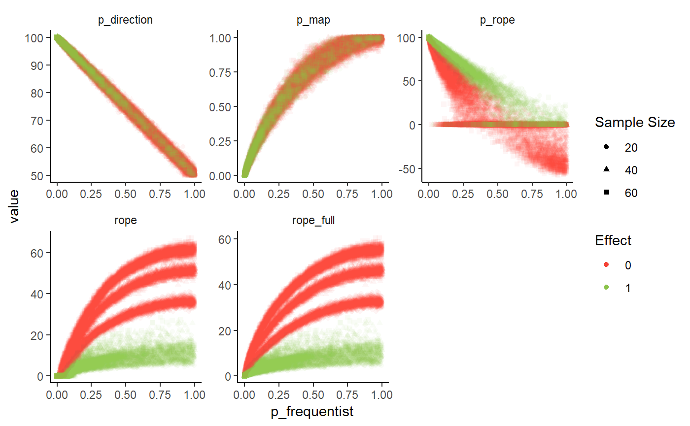
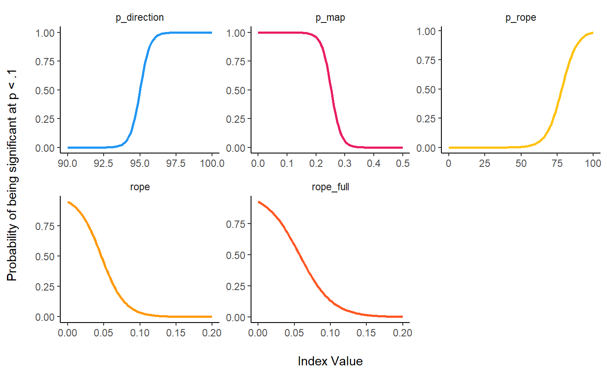
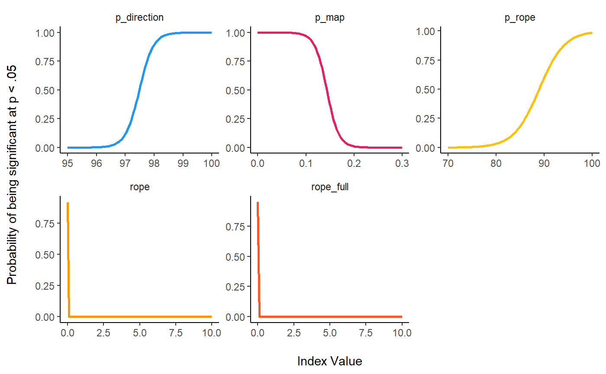
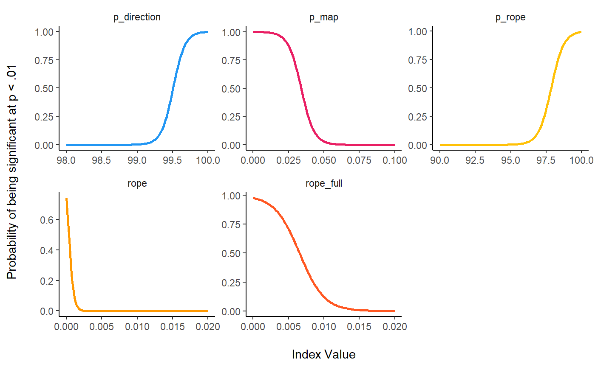
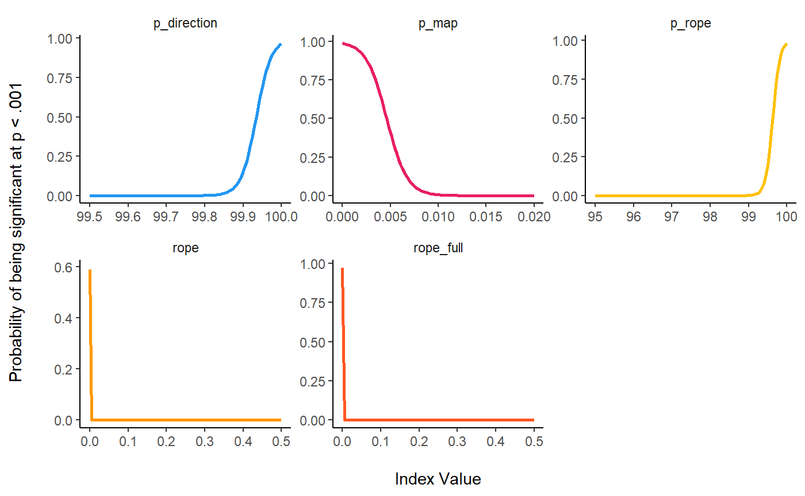

Comparison of Indices for Parameter’s Posteriors Description in the Bayesian Framework
Generate Regression Data with Noise
library(ggplot2)
library(dplyr)
library(tidyr)
df <- read.csv("https://raw.github.com/DominiqueMakowski/bayestestR/master/data/bayes_indices.csv")For the sake of time and computational space, we downloaded the data from github. However, you can find the code to generate it again below (takes about 1h).
library(bayestestR)
library(rstanarm)
library(broom)
# options(mc.cores = parallel::detectCores())
set.seed(333)
generate_data <- function(sample_size, noise, correlation=1){
data <- data.frame(x = scale(rnorm(sample_size, 0, 1)))
if(correlation==1){
data$y <- scale(data$x)
data$y <- data$y + rnorm(sample_size, mean = 0, sd = noise)
} else{
data$y <- scale(rnorm(sample_size, 0, 1))
}
return(data)
}
# df <- read.csv("https://raw.github.com/DominiqueMakowski/bayestestR/master/data/bayes_indices.csv")
# df <- read.csv("../data/bayes_indices.csv")
df <- data.frame() # Uncomment this if you want to reset the data
for(noise in c(0.1, seq(2.5, 5, by=2.5))){
for(sample_size in c(20, 40, 60)){
print(paste0(noise, "-", sample_size))
for(effect in c(0, 1)){
for(prior in c(0, 1)){
for(i in 1:1000){
cat(".")
data <- generate_data(sample_size, noise, effect)
freq_model <- lm(y ~ x, data=data)
summary(freq_model)
beta <- broom::tidy(freq_model)[2, ]$estimate
p_frequentist <- broom::tidy(freq_model)[2, ]$p.value
out <- capture.output(bayes_model <- rstanarm::stan_glm(y ~ x,
data=data,
chains=2,
prior=normal(location=prior)))
posterior <- as.data.frame(bayes_model)$x
median <- median(posterior)
mean <- mean(posterior)
map <- map_estimate(posterior)[1]
p_direction <- p_direction(posterior)
rope <- rope(posterior, bounds = c(-0.1, 0.1))
rope_full <- rope(posterior, bounds = c(-0.1, 0.1), CI=100)
p_rope <- p_rope(posterior, bounds = c(-0.1, 0.1))
p_map <- p_map(posterior)
df <- rbind(df,
data.frame(effect=effect,
noise=noise,
sample_size=sample_size,
prior=prior,
prior_correct=abs(1-abs(effect-prior)),
iteration=i,
beta = beta,
median = median,
mean = mean,
map = map,
p_frequentist = p_frequentist,
p_direction = p_direction,
rope = rope,
rope_full = rope_full,
p_rope=p_rope,
p_map = p_map))
}
}
}
}
write.csv(df, "../data/bayes_indices.csv", row.names = FALSE)
}Comparison of Parameter’s Point-Estimates
Relationship with the theorethical true value
Sensitivity to Noise
df %>%
select(noise, beta, prior_correct, effect, median, mean, map) %>%
gather(estimate, value, -noise, -effect, -prior_correct) %>%
mutate(noise = as.factor(noise),
prior_correct = as.factor(prior_correct),
value = value-effect) %>%
ggplot(aes(x = noise, y = value, fill = estimate, color=prior_correct)) +
geom_boxplot() +
geom_hline(yintercept = 0) +
theme_classic() +
scale_fill_manual(values = c("beta" = "#607D8B", "map" = "#795548", "mean" = "#FF9800", "median" = "#FFEB3B"),
name = "Index") +
scale_color_manual(values = c(`0`="#f44336", `1`="#8BC34A"),
name = "Correct Prior") +
xlab("Point-estimate of the true value 0\n") +
ylab("\nNoise") +
coord_cartesian(ylim=c(-1, 1))
Sensitivity to Sample Size
df %>%
select(sample_size, beta, effect, prior_correct, median, mean, map) %>%
gather(estimate, value, -sample_size, -effect, -prior_correct) %>%
mutate(sample_size = as.factor(sample_size),
prior_correct = as.factor(prior_correct),
value = value-effect) %>%
ggplot(aes(x = sample_size, y = value, fill = estimate, color=prior_correct)) +
geom_boxplot() +
geom_hline(yintercept = 0) +
theme_classic() +
scale_fill_manual(values = c("beta" = "#607D8B", "map" = "#795548", "mean" = "#FF9800", "median" = "#FFEB3B"),
name = "Index") +
scale_color_manual(values = c(`0`="#f44336", `1`="#8BC34A"),
name = "Correct Prior") +
ylab("Point-estimate of the true value 0\n") +
xlab("\nSample Size") +
coord_cartesian(ylim=c(-1, 1))
Summary
df %>%
select(sample_size, beta, effect, prior_correct, median, mean, map, noise) %>%
gather(estimate, value, -sample_size, -effect, -prior_correct, -noise) %>%
mutate(noise= scale(noise),
sample_size = scale(sample_size),
prior_correct = as.factor(prior_correct)) %>%
glm(effect ~ estimate/value * noise * sample_size * prior_correct, data=., family="binomial") %>%
broom::tidy() %>%
select(term, estimate, p=p.value) %>%
filter(stringr::str_detect(term, 'value')) %>%
mutate(term = stringr::str_remove(term, ":value"),
term = stringr::str_remove(term, "estimate"),
p = ifelse(p < .001, "< .001***", ifelse(p < .01, "< .01**", ifelse(p < .05, "< .05*", "> .05")))) %>%
knitr::kable(digits=2)| term | estimate | p |
|---|---|---|
| beta | 12.54 | < .001*** |
| map | 12.30 | < .001*** |
| mean | 12.49 | < .001*** |
| median | 12.50 | < .001*** |
| beta:noise | -6.74 | < .001*** |
| map:noise | -6.61 | < .001*** |
| mean:noise | -6.72 | < .001*** |
| median:noise | -6.73 | < .001*** |
| beta:sample_size | 5.03 | < .001*** |
| map:sample_size | 4.95 | < .001*** |
| mean:sample_size | 4.99 | < .001*** |
| median:sample_size | 4.99 | < .001*** |
| beta:prior_correct1 | -0.64 | > .05 |
| map:prior_correct1 | -0.67 | > .05 |
| mean:prior_correct1 | -0.53 | > .05 |
| median:prior_correct1 | -0.53 | > .05 |
| beta:noise:sample_size | -2.48 | < .001*** |
| map:noise:sample_size | -2.43 | < .001*** |
| mean:noise:sample_size | -2.45 | < .001*** |
| median:noise:sample_size | -2.46 | < .001*** |
| beta:noise:prior_correct1 | 0.55 | > .05 |
| map:noise:prior_correct1 | 0.61 | > .05 |
| mean:noise:prior_correct1 | 0.51 | > .05 |
| median:noise:prior_correct1 | 0.51 | > .05 |
| beta:sample_size:prior_correct1 | -0.47 | > .05 |
| map:sample_size:prior_correct1 | -0.52 | > .05 |
| mean:sample_size:prior_correct1 | -0.44 | > .05 |
| median:sample_size:prior_correct1 | -0.44 | > .05 |
| beta:noise:sample_size:prior_correct1 | 0.44 | > .05 |
| map:noise:sample_size:prior_correct1 | 0.48 | > .05 |
| mean:noise:sample_size:prior_correct1 | 0.42 | > .05 |
| median:noise:sample_size:prior_correct1 | 0.43 | > .05 |
Comparison of Indices of Effect Existence
Effect Detection
Sensitivity to Noise
df %>%
select(noise, effect, sample_size, p_frequentist, p_direction, p_map, p_rope, rope, rope_full) %>%
gather(index, value, -noise, -sample_size, -effect) %>%
mutate(noise = as.factor(noise),
effect = as.factor(effect),
index = factor(index, levels=c("p_frequentist", "p_direction", "p_map", "p_rope", "rope", "rope_full"))) %>%
ggplot(aes(x = noise, y=value, color = effect, fill=index)) +
geom_boxplot() +
facet_wrap(~index, scales = "free") +
theme_classic() +
theme(strip.background = element_blank()) +
scale_color_manual(values = c(`0` = "#f44336", `1` = "#8BC34A", name="Effect")) +
scale_fill_manual(values = c("p_frequentist"="#607D8B", "p_map" = "#E91E63", "p_direction" = "#2196F3",
"rope" = "#FF9800", "rope_full" = "#FF5722", "p_rope"="#FFC107"), guide=FALSE) +
ylab("Noise\n") +
xlab("\nSample Size")
Sensitivity to Sample Size
df %>%
select(noise, effect, sample_size, p_frequentist, p_direction, p_map, p_rope, rope, rope_full) %>%
gather(index, value, -noise, -sample_size, -effect) %>%
mutate(sample_size = as.factor(sample_size),
effect = as.factor(effect),
index = factor(index, levels=c("p_frequentist", "p_direction", "p_map", "p_rope", "rope", "rope_full"))) %>%
ggplot(aes(x = sample_size, y=value, color = effect, fill=index)) +
geom_boxplot() +
facet_wrap(~index, scales = "free") +
theme_classic() +
theme(strip.background = element_blank()) +
scale_color_manual(values = c(`0` = "#f44336", `1` = "#8BC34A", name="Effect")) +
scale_fill_manual(values = c("p_frequentist"="#607D8B", "p_map" = "#E91E63", "p_direction" = "#2196F3",
"rope" = "#FF9800", "rope_full" = "#FF5722", "p_rope"="#FFC107"), guide=FALSE) +
ylab("Index Value\n") +
xlab("\nSample Size")
Sensitivity to Priors
df %>%
select(noise, effect, sample_size, p_frequentist, p_direction, p_map, p_rope, rope, rope_full, prior_correct) %>%
gather(index, value, -noise, -sample_size, -effect, -prior_correct) %>%
mutate(sample_size = as.factor(sample_size),
effect = as.factor(effect),
prior_correct = as.factor(prior_correct),
index = factor(index, levels=c("p_frequentist", "p_direction", "p_map", "p_rope", "rope", "rope_full"))) %>%
ggplot(aes(x = effect, y=value, color = prior_correct, fill=index)) +
geom_boxplot() +
facet_wrap(~index, scales = "free") +
theme_classic() +
theme(strip.background = element_blank()) +
scale_color_manual(values = c(`0` = "#f44336", `1` = "#8BC34A", name="Correct Prior")) +
scale_fill_manual(values = c("p_frequentist"="#607D8B", "p_map" = "#E91E63", "p_direction" = "#2196F3",
"rope" = "#FF9800", "rope_full" = "#FF5722", "p_rope"="#FFC107"), guide=FALSE) +
ylab("Index Value\n") +
xlab("\nEffect")
Summary
df %>%
mutate(p_frequentist = scale(p_frequentist),
p_direction = scale(p_direction),
p_map = scale(p_map),
p_rope = scale(p_rope),
rope = scale(rope),
rope_full = scale(rope_full)) %>%
select(noise, effect, sample_size, p_frequentist, p_direction, p_map, p_rope, rope, rope_full, prior_correct) %>%
gather(index, value, -noise, -sample_size, -effect, -prior_correct) %>%
mutate(sample_size = scale(sample_size),
noise=scale(noise),
effect = as.factor(effect),
prior_correct = as.factor(prior_correct),
index = factor(index, levels=c("p_frequentist", "p_direction", "p_map", "p_rope", "rope", "rope_full"))) %>%
glm(effect ~ index/value * noise * sample_size * prior_correct, data=., family="binomial") %>%
broom::tidy() %>%
select(term, estimate, p=p.value) %>%
filter(stringr::str_detect(term, 'value')) %>%
mutate(term = stringr::str_remove(term, ":value"),
term = stringr::str_remove(term, "index"),
p = ifelse(p < .001, "< .001***", ifelse(p < .01, "< .01**", ifelse(p < .05, "< .05*", "> .05")))) %>%
knitr::kable(digits=2)| term | estimate | p |
|---|---|---|
| p_frequentist | -3.41 | < .001*** |
| p_direction | 3.39 | < .001*** |
| p_map | -2.60 | < .001*** |
| p_rope | 3.25 | < .001*** |
| rope | -5.85 | < .001*** |
| rope_full | -7.07 | < .001*** |
| p_frequentist:noise | 2.22 | < .001*** |
| p_direction:noise | -2.20 | < .001*** |
| p_map:noise | 1.44 | < .001*** |
| p_rope:noise | -1.47 | < .001*** |
| rope:noise | 0.99 | < .001*** |
| rope_full:noise | 0.67 | < .001*** |
| p_frequentist:sample_size | -1.46 | < .001*** |
| p_direction:sample_size | 1.43 | < .001*** |
| p_map:sample_size | -0.84 | < .001*** |
| p_rope:sample_size | 0.98 | < .001*** |
| rope:sample_size | -0.46 | < .001*** |
| rope_full:sample_size | -0.30 | < .05* |
| p_frequentist:prior_correct1 | 0.01 | > .05 |
| p_direction:prior_correct1 | 0.03 | > .05 |
| p_map:prior_correct1 | 0.00 | > .05 |
| p_rope:prior_correct1 | -0.05 | > .05 |
| rope:prior_correct1 | 0.13 | > .05 |
| rope_full:prior_correct1 | 0.17 | > .05 |
| p_frequentist:noise:sample_size | 0.95 | < .001*** |
| p_direction:noise:sample_size | -0.93 | < .001*** |
| p_map:noise:sample_size | 0.42 | < .001*** |
| p_rope:noise:sample_size | -0.49 | < .001*** |
| rope:noise:sample_size | 0.50 | < .001*** |
| rope_full:noise:sample_size | 0.45 | < .001*** |
| p_frequentist:noise:prior_correct1 | -0.01 | > .05 |
| p_direction:noise:prior_correct1 | -0.02 | > .05 |
| p_map:noise:prior_correct1 | 0.00 | > .05 |
| p_rope:noise:prior_correct1 | 0.07 | > .05 |
| rope:noise:prior_correct1 | -0.04 | > .05 |
| rope_full:noise:prior_correct1 | -0.06 | > .05 |
| p_frequentist:sample_size:prior_correct1 | -0.05 | > .05 |
| p_direction:sample_size:prior_correct1 | 0.07 | > .05 |
| p_map:sample_size:prior_correct1 | -0.03 | > .05 |
| p_rope:sample_size:prior_correct1 | 0.01 | > .05 |
| rope:sample_size:prior_correct1 | -0.04 | > .05 |
| rope_full:sample_size:prior_correct1 | -0.20 | > .05 |
| p_frequentist:noise:sample_size:prior_correct1 | 0.01 | > .05 |
| p_direction:noise:sample_size:prior_correct1 | -0.03 | > .05 |
| p_map:noise:sample_size:prior_correct1 | 0.00 | > .05 |
| p_rope:noise:sample_size:prior_correct1 | 0.02 | > .05 |
| rope:noise:sample_size:prior_correct1 | 0.00 | > .05 |
| rope_full:noise:sample_size:prior_correct1 | -0.11 | > .05 |
Relationship with the frequentist’s p value
df %>%
select(noise, sample_size, p_frequentist, p_direction, p_map, p_rope, rope, rope_full, effect) %>%
gather(index, value, -noise, -p_frequentist, -sample_size, -effect) %>%
mutate(effect = as.factor(effect),
sample_size = as.factor(sample_size),
index = factor(index, levels=c("p_frequentist", "p_direction", "p_map", "p_rope", "rope", "rope_full"))) %>%
ggplot(aes(x = p_frequentist, y = value, color = effect, shape=sample_size)) +
geom_point(alpha=0.05) +
facet_wrap(~index, scales = "free") +
theme_classic() +
theme(strip.background = element_blank()) +
scale_color_manual(values = c(`0` = "#f44336", `1` = "#8BC34A"), name="Effect") +
guides(colour = guide_legend(override.aes = list(alpha = 1)),
shape = guide_legend(override.aes = list(alpha = 1), title="Sample Size"))
Relationship with frequentist’s arbitrary clusters
df$sig_1 <- factor(ifelse(df$p_frequentist >= .1, "n.s.", "-"), levels=c("n.s.", "-"))
df$sig_05 <- factor(ifelse(df$p_frequentist >= .05, "n.s.", "*"), levels=c("n.s.", "*"))
df$sig_01 <- factor(ifelse(df$p_frequentist >= .01, "n.s.", "**"), levels=c("n.s.", "**"))
df$sig_001 <- factor(ifelse(df$p_frequentist >= .001, "n.s.", "***"), levels=c("n.s.", "***"))
get_data <- function(predictor, outcome, lbound=0, ubound=0.3){
fit <- glm(paste(outcome, "~", predictor), data=df, family = "binomial")
data <- data.frame(x=1:100)
data[predictor] <- seq(lbound, ubound, length.out = 100)
data$index <- predictor
data[outcome] = predict(fit, newdata=data, type="response")
data <- select_(data, "value"=predictor, outcome, "index")
return(data)
}Significant at .1
rbind(
get_data(predictor="p_map", outcome="sig_1", lbound=0, ubound=0.5),
get_data(predictor="p_direction", outcome="sig_1", lbound=90, ubound=100),
get_data(predictor="rope", outcome="sig_1", lbound=0, ubound=0.2),
get_data(predictor="rope_full", outcome="sig_1", lbound=0, ubound=0.2),
get_data(predictor="p_rope", outcome="sig_1", lbound=0, ubound=100)
) %>%
mutate(index = as.factor(index)) %>%
ggplot(aes(x=value, y=sig_1, color=index)) +
geom_line(size=1) +
facet_wrap(~index, scales = "free") +
theme_classic() +
theme(strip.background = element_blank()) +
scale_color_manual(values = c("p_frequentist"="#607D8B", "p_map" = "#E91E63", "p_direction" = "#2196F3",
"rope" = "#FF9800", "rope_full" = "#FF5722", "p_rope"="#FFC107"), guide=FALSE) +
ylab("Probability of being significant at p < .1\n") +
xlab("\nIndex Value")
Significant at .05
rbind(
get_data(predictor="p_map", outcome="sig_05", lbound=0, ubound=0.3),
get_data(predictor="p_direction", outcome="sig_05", lbound=95, ubound=100),
get_data(predictor="rope", outcome="sig_05", lbound=0, ubound=0.1),
get_data(predictor="rope_full", outcome="sig_05", lbound=0, ubound=0.1),
get_data(predictor="p_rope", outcome="sig_05", lbound=70, ubound=100)
) %>%
mutate(index = as.factor(index)) %>%
ggplot(aes(x=value, y=sig_05, color=index)) +
geom_line(size=1) +
facet_wrap(~index, scales = "free") +
theme_classic() +
theme(strip.background = element_blank()) +
scale_color_manual(values = c("p_frequentist"="#607D8B", "p_map" = "#E91E63", "p_direction" = "#2196F3",
"rope" = "#FF9800", "rope_full" = "#FF5722", "p_rope"="#FFC107"), guide=FALSE) +
ylab("Probability of being significant at p < .05\n") +
xlab("\nIndex Value")
Significant at .01
rbind(
get_data(predictor="p_map", outcome="sig_01", lbound=0, ubound=0.1),
get_data(predictor="p_direction", outcome="sig_01", lbound=98, ubound=100),
get_data(predictor="rope", outcome="sig_01", lbound=0, ubound=0.02),
get_data(predictor="rope_full", outcome="sig_01", lbound=0, ubound=0.02),
get_data(predictor="p_rope", outcome="sig_01", lbound=90, ubound=100)
) %>%
mutate(index = as.factor(index)) %>%
ggplot(aes(x=value, y=sig_01, color=index)) +
geom_line(size=1) +
facet_wrap(~index, scales = "free") +
theme_classic() +
theme(strip.background = element_blank()) +
scale_color_manual(values = c("p_frequentist"="#607D8B", "p_map" = "#E91E63", "p_direction" = "#2196F3",
"rope" = "#FF9800", "rope_full" = "#FF5722", "p_rope"="#FFC107"), guide=FALSE) +
ylab("Probability of being significant at p < .01\n") +
xlab("\nIndex Value")
Significant at .001
rbind(
get_data(predictor="p_map", outcome="sig_001", lbound=0, ubound=0.02),
get_data(predictor="p_direction", outcome="sig_001", lbound=99.5, ubound=100),
get_data(predictor="rope", outcome="sig_001", lbound=0, ubound=0.01),
get_data(predictor="rope_full", outcome="sig_001", lbound=0, ubound=0.005),
get_data(predictor="p_rope", outcome="sig_001", lbound=95, ubound=100)
) %>%
mutate(index = as.factor(index)) %>%
ggplot(aes(x=value, y=sig_001, color=index)) +
geom_line(size=1) +
facet_wrap(~index, scales = "free") +
theme_classic() +
theme(strip.background = element_blank()) +
scale_color_manual(values = c("p_frequentist"="#607D8B", "p_map" = "#E91E63", "p_direction" = "#2196F3",
"rope" = "#FF9800", "rope_full" = "#FF5722", "p_rope"="#FFC107"), guide=FALSE) +
ylab("Probability of being significant at p < .001\n") +
xlab("\nIndex Value")
Reporting Guidelines
From that, we can conclude:
- For simple models and normally distributed posteriors, the MAP estimate seems to be more biased than the mean and the median of the posterior distribution.
- Aside from being more robust, the median makes more sense than the mean in a probabilistic framework (e.g., there is 50% chance that the true effect is either higher or lower than the median).
- The traditional ROPE is not sensitive to delineate highly “significant” effects. The full ROPE does not present the same flaw.
- The Probability of Direction (p) is the closest index to the frequentist p value.
To minimally describe the posterior distribution of a parameter, we suggest reporting the median and the 90% CI (the 90% HDI) for parameter characterisation and, in the context of null-hypothesis testing, the Probability of Direction (pd) for effect existence and, especially in the context of confirmatory analyses, the ROPE (full) with an explicitly specified range for effect significance.
Frequentist-like Arbitrary Thresholds
The following thresholds are presented as landmarks only for comparison with the frequentist framework. Please consider with caution.
-
p (direction)
- p (direction) < 95% ~ p < .1: uncertain
- p (direction) > 95% ~ p < .1: possibly existing
- p (direction) > 97.5% ~ p < .05: likely existing
- p (direction) > 99% ~ p < .01: probably existing
- p (direction) > 99.9% ~ p < .001: certainly existing
- p (direction) = 100%: definitely existing
-
ROPE (full)
- Depends on other parameters such as sample size and ROPE bounds
Note: If you have any advice, opinion or such, we encourage you to let us know by opening an discussion thread or making a pull request.